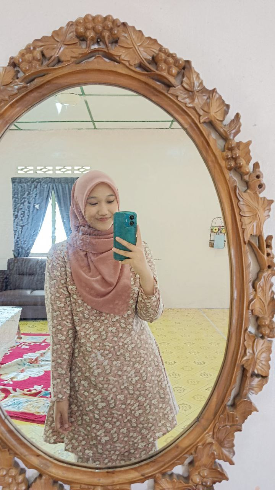

My Biodata
|  | |
| Name | Nurul Syazwina binti Shoib |
| Age | 20 Years Old |
| Date of Birth | 23rd December 2004 |
| Gender | Female |
| Race | Malay |
| City | Selangor |
| Nationality | Malaysia |
{kind=link}
Assalamualaikum and Hello! My name is Nurul Syazwina binti Shoib, and I'm so excited to tell you a little bit about me. I was born on 23rd December 2004 in the beautful city of Selangor, Malaysia, and now I'm 20 years old. I'm now currently study at Universiti Teknologi MARA (UiTM) Campus Segamat, Johor, where I'm in my last year of Diploma. In my free time, I love to reading books. I could spent hour diving in reading a fiction novel such as "Empayar" by Teme Abdullah, "Jika Aku" by Anna Lee, "Trio" by Hanani Natasya and more. When I'm not reading, I enjoy imagining my own stories or talking about books with my friends. I also love spending time with my family, especially when everyone gathers together. We enjoy eating meals together, chatting, and sometimes playing games or watching movies. These moments make me appreciate my family even more.
- Teme Abdullah
- Anna Lee
- Abstrakim
- Hanani Natasya
My Favourite Author
- Empayar
- Introvert
- Jika Aku
- Trio
My Favourite books
- Mimpi-Aisyah Aziz
- Susun Silang Kata-Aizat Amdan
- Gala bunga Matahari-Sal Priadi
Songs I enjoy while studying or reading
Favourite Kdrama Series
"Daily Dose of Sunshine" is a South Korean drama about Jung Da-hee, a young nurse working at a psychiatric hospital. The story follows her as she cares for patients with mental health issues while also dealing with her own personal struggles. Da-hee is kind and compassionate, but she faces emotional challenges as she helps her patients heal. The drama explores themes of mental health, healing, and empathy, showing how Da-hee learns to take care of herself while supporting others. It also touches on the stigma around mental illness and the importance of human connection in overcoming struggles.